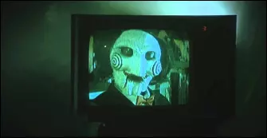
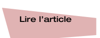

“I want to play a game”
Welcome to the captivating darkness of 'Saw': explore the film, the line, the director, a book and the music that
accompanies it.
"I want to play a game" : Jigsaw's Deadly
Enigma

This iconic phrase marked the beginning of psychological horror and the "torture porn" subgenre.
But what makes this line so memorable and frightening?

Saw: The Psychological Horror That Haunts Our Nightmares
Who is James Wan, the maestro of modern horror?
From Insidious to Conuring, discover the story of James Wan, who knew how to redefine the cinema genre
of horror by marking an entire generation of film buffs passionate about thrills.
“The Cutting Edge: Philosophy of the SAW Films”: Philosophical Decryption of Saw
“Spiral” by 21 Savage: A Dark Anthem for the Return of “Saw” in 2021
In 2021, 21 Savage made our blood run cold with the release of the title Spiral for the soundtrack of the
ninth installment of the saga of the same name “Spiral: The Legacy of Saw”